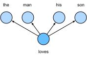
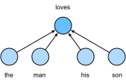

15.1. 词嵌入（word2vec）¶
自然语言是一个用于表达意义的复杂系统。 在这个系统中，词是意义的基本单位。 顾名思义， 词向量（word vectors）是用来表示词的向量， 也可以看作词的特征向量或表示。 将词映射为实向量的技术 称为词嵌入（word embedding）。 近年来， 词嵌入逐渐成为 自然语言处理的基础知识。
15.1.1. 独热向量是一个糟糕的选择¶
在 9.5节 中，我们使用独热向量来表示词（字符就是词）。 假设词表中不同词的个数（词表大小）为 \(N\)， 每个词对应 一个从 \(0\) 到 \(N-1\) 的不同整数（索引）。 为了得到索引为 \(i\) 的任意词的 独热向量表示， 我们创建一个长度为 \(N\) 的全零向量， 并将位置 \(i\) 处的元素设为 1。 这样，每个词都被表示为一个长度为 \(N\) 的向量， 并且可以直接被神经网络使用。
尽管独热词向量易于构造， 但它们通常不是一个好的选择。 一个主要原因是独热词向量无法准确表达不同词之间的相似性，例如我们常用的余弦相似度（cosine similarity）。 对于向量 \(\mathbf{x}, \mathbf{y} \in \mathbb{R}^d\)，它们的余弦相似度是二者之间夹角的余弦：
由于任意两个不同词的独热向量之间的余弦相似度均为 0， 独热向量无法编码词与词之间的相似性。
15.1.2. 自监督的 word2vec¶
word2vec 工具正是为解决上述问题而提出的。 它将每个词映射为一个固定长度的向量，这些向量能更好地表达不同词之间的相似性和类比关系。 word2vec 工具包含两个模型，即跳元模型（skip-gram）:cite:Mikolov.Sutskever.Chen.ea.2013 和连续词袋模型（continuous bag of words，CBOW）:cite:Mikolov.Chen.Corrado.ea.2013。 为了获得语义上有意义的表示， 它们的训练依赖于 条件概率， 这些条件概率可以视为在语料库中 用某些周围的词 来预测某一些词。 由于监督来自不带标签的数据， 跳元模型和连续词袋模型 都是自监督模型。
下面，我们将介绍这两个模型及其训练方法。
15.1.3. 跳元模型¶
跳元模型（skip-gram）假设一个词可以用来生成文本序列中它周围的词。 以文本序列”the”、“man”、“loves”、“his”、“son”为例。 让我们选择”loves”作为中心词（center word），并将上下文窗口大小设为 2。 如 图15.1.1 所示， 给定中心词”loves”， 跳元模型考虑 生成上下文词（context words）“the”、“man”、“his”和”son”的条件概率， 这些词与中心词的距离不超过 2 个词：
假设 给定中心词时， 上下文词是独立生成的（即条件独立）。 在这种情况下，上述条件概率 可以改写为

图15.1.1 跳元模型考虑给定中心词时生成其周围上下文词的条件概率。¶
在跳元模型中，每个词 都有两个 \(d\) 维的向量表示， 用于计算条件概率。 更具体地说， 对于词表中索引为 \(i\) 的任意词， 分别用 \(\mathbf{v}_i\in\mathbb{R}^d\) 和 \(\mathbf{u}_i\in\mathbb{R}^d\) 表示其作为中心词和上下文词时的 两个向量。 给定中心词 \(w_c\)（在词表中的索引为 \(c\)）时， 生成任意上下文词 \(w_o\)（在词表中的索引为 \(o\)）的条件概率， 可以通过对向量点积的 softmax 运算来建模：
其中词表索引集 \(\mathcal{V} = \{0, 1, \ldots, |\mathcal{V}|-1\}\)。 给定长度为 \(T\) 的文本序列，其中时间步 \(t\) 处的词记为 \(w^{(t)}\)。 假设 给定任意中心词时， 上下文词是独立生成的。 对于上下文窗口大小 \(m\)， 跳元模型的似然函数 是给定任意中心词时 生成所有上下文词的概率：
其中任何小于 \(1\) 或大于 \(T\) 的时间步都可以省略。
15.1.3.1. 训练¶
跳元模型的参数是词表中每个词的中心词向量和上下文词向量。 在训练中，我们通过最大化似然函数（即最大似然估计）来学习模型参数。这等价于最小化以下损失函数：
当使用随机梯度下降来最小化损失时， 在每次迭代中， 我们可以 随机采样一个较短的子序列，计算该子序列的（随机）梯度，以更新模型参数。 为了计算这个（随机）梯度， 我们需要得到 对数条件概率 关于中心词向量和上下文词向量的梯度。 一般来说，根据 (15.1.4)， 涉及任意一对中心词 \(w_c\) 和 上下文词 \(w_o\) 的 对数条件概率为
通过求导，我们可以得到它 关于中心词向量 \(\mathbf{v}_c\) 的梯度：
请注意，(15.1.8) 中的计算需要词表中所有以 \(w_c\) 为中心词的条件概率。 其他词向量的梯度可以用同样的方法获得。
训练之后，对于词表中索引为 \(i\) 的任意词，我们可以得到两个词向量 \(\mathbf{v}_i\)（作为中心词）和 \(\mathbf{u}_i\)（作为上下文词）。 在自然语言处理应用中，通常使用跳元模型的中心词向量 作为词表示。
15.1.4. 连续词袋（CBOW）模型¶
连续词袋（continuous bag of words，CBOW）模型与跳元模型相似。 与跳元模型的主要区别在于， 连续词袋模型 假设中心词是 基于文本序列中其周围的上下文词生成的。 例如， 在相同的文本序列”the”、“man”、“loves”、“his”和”son”中，以”loves”为中心词、上下文窗口大小为 2 时， 连续词袋模型 考虑 基于上下文词”the”、“man”、“his”和”son”生成中心词”loves”的条件概率（如 图15.1.2 所示），即

图15.1.2 连续词袋模型考虑给定周围上下文词时生成中心词的条件概率。¶
由于连续词袋模型中有 多个上下文词， 在计算条件概率时 这些上下文词向量会被取平均。 具体来说， 对于词表中索引为 \(i\) 的任意词， 分别用 \(\mathbf{v}_i\in\mathbb{R}^d\) 和 \(\mathbf{u}_i\in\mathbb{R}^d\) 表示其作为上下文词和中心词时的 两个向量 （在跳元模型中含义正好相反）。 给定周围上下文词 \(w_{o_1}, \ldots, w_{o_{2m}}\)（在词表中的索引为 \(o_1, \ldots, o_{2m}\)）时， 生成任意中心词 \(w_c\)（在词表中的索引为 \(c\)）的条件概率可以建模为
为简洁起见，令 \(\mathcal{W}_o= \{w_{o_1}, \ldots, w_{o_{2m}}\}\)，\(\bar{\mathbf{v}}_o = \left(\mathbf{v}_{o_1} + \ldots + \mathbf{v}_{o_{2m}} \right)/(2m)\)。则 (15.1.10) 可以简化为
给定长度为 \(T\) 的文本序列，其中时间步 \(t\) 处的词记为 \(w^{(t)}\)。 对于上下文窗口大小 \(m\)， 连续词袋模型的似然函数 是给定上下文词时 生成所有中心词的概率：
15.1.4.1. 训练¶
训练连续词袋模型 与训练跳元模型 几乎相同。 连续词袋模型的 最大似然估计等价于最小化以下损失函数：
请注意
通过求导，我们可以得到它 关于任意上下文词向量 \(\mathbf{v}_{o_i}\)（\(i = 1, \ldots, 2m\)） 的梯度：
其他词向量的梯度可以用同样的方法获得。 与跳元模型不同， 连续词袋模型 通常 使用上下文词向量作为词表示。
15.1.5. 小结¶
词向量是用来表示词的向量，也可以看作词的特征向量或表示。将词映射为实向量的技术称为词嵌入。
word2vec 工具包含跳元模型和连续词袋模型。
跳元模型假设一个词可以用来生成文本序列中它周围的词；而连续词袋模型假设中心词是基于其周围的上下文词生成的。
15.1.6. 练习¶
计算每个梯度的计算复杂度是多少？如果词表很大，可能会有什么问题？
英语中一些固定短语由多个词组成，例如”new york”。如何训练它们的词向量？提示：参见 word2vec 论文 (Mikolov et al., 2013) 的第 4 节。
让我们以跳元模型为例反思 word2vec 的设计。跳元模型中两个词向量的点积与余弦相似度之间是什么关系？对于语义相近的一对词，为什么它们的词向量（由跳元模型训练）的余弦相似度可能很高？